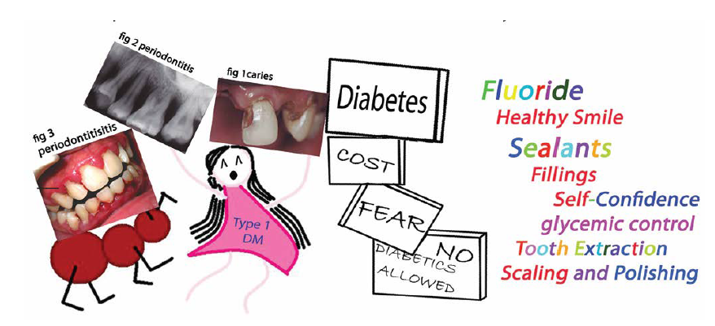
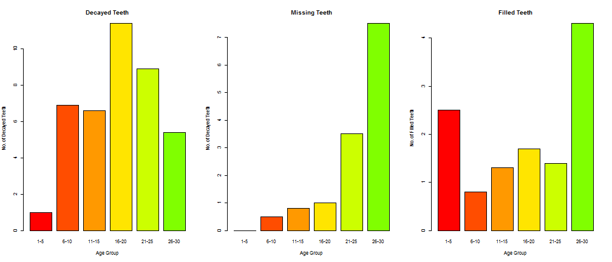
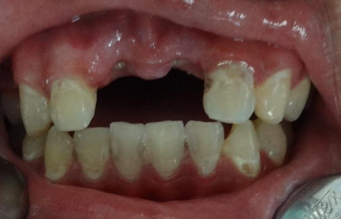
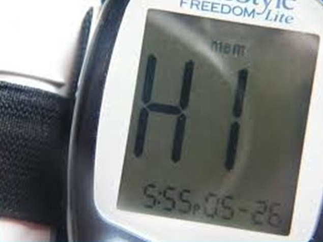
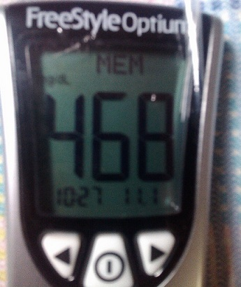
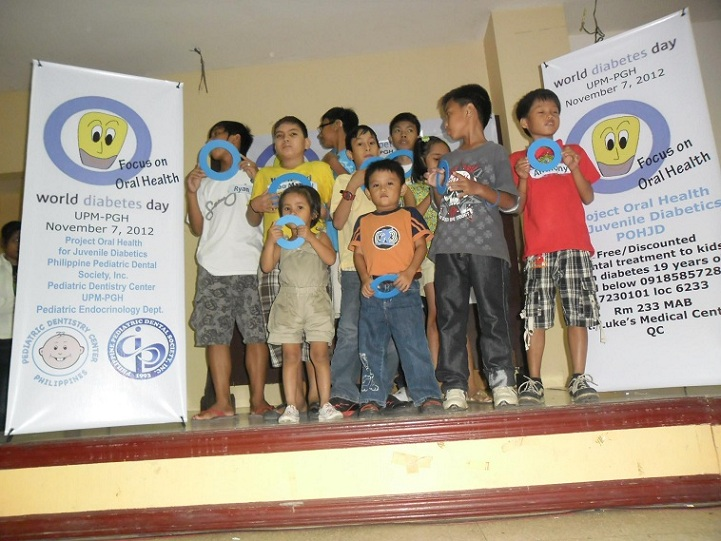
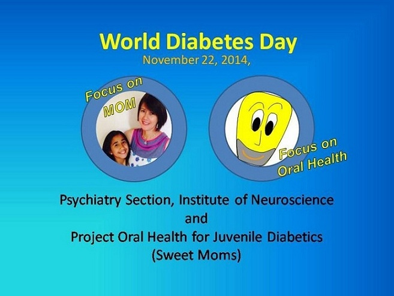

Providing Oral Health Care access to children and youth with diabetes
Edmund Julian L. Ofilada
Project Coordinator
Navigation
In the beginning...
In 1996, Project Oral Health for Juvenile Diabetics (POHJD) was initiated to provide dental treatment to type 1 diabetics in Metro Manila. The project was started with the premise that the oral health of type 1 diabetic patients is largely neglected because of the financial demands of diabetes and the lack of information regarding the importance of oral health among children and families of patients with diabetes.
In 1997, funding for the project ($8,613.89) was provided by the Jash Ressei Committee from Japan through the Religious of the Sacred Heart, a religious organization here in the Philippines.
Patients were recruited from the Philippine General Hospital, non-governmental organizations such as the Juvenile Diabetes Foundation Philippines, Inc. (JDFPI), Diabetes Care (Diacare), and the Institute for Studies in Diabetes Foundation, Inc. (ISDFI). Private physicians engaged in the practice of treating patients with diabetes were informed of the project as well.
Participant's profile

By December of 2011...
POHJD was able to provide dental treatment to 100 children and youth with diabetes
202 consultations and oral examinations, 114 pocket probing, and 431 x-ray examinations were performed
449 teeth were restored using amalgam, composite and glass ionomer restorations
Only 19 Root Canal Treatments compared to 212 tooth extractions were performed
226 pit and fissure sealants and 53 topical fluoride applications
155 scaling and polishing (removal of tartar) and 28 root planings (treatment for periodontitis) were performed
What we found in between ...

DMFT Index
The DMFT index is a simple count of the number of decayed, missing and filled teeth in an individual averaged over a population or age group. It is a widely accepted method for comparing prevalence of tooth decay between populations. Adding D, M, and F yields the DMFT score.
| AgeGrp | Decayed | Missing | Filled | DMFT |
|---|---|---|---|---|
| 1-5 | 1.0 | 0.0 | 2.5 | 3.5 |
| 6-10 | 6.9 | 0.5 | 0.8 | 8.2 |
| 11-15 | 6.6 | 0.8 | 1.3 | 8.7 |
| 16-20 | 11.4 | 1.0 | 1.7 | 14.3 |
| 21-25 | 8.9 | 3.5 | 1.4 | 14.3 |
| 26-30 | 5.4 | 7.5 | 4.3 | 19.3 |
Decayed, Missing and Filled Teeth

TAKE NOTE: the scales for the y-axis are different
Periodontitis and Age

Age was a significant predictor of periodontitis
Periodontitis and Tooth Decay

Tooth decay was a significant predictor of periodontitis
Early Onset Periodontitis

A sub-group of the population tend to develop periodontitis early consistent with reports in literature
Barriers to Access to Dental Care
The following were the reasons cited by the respondents for their reluctance to seek dental treatment:
- cost of dental consultation and management (cited by 50%);
- difficulty in finding dentists who are willing to treat diabetic patients (30.8%);
- fear of dental procedures (24.4%);
- the need to obtain medical clearance (14.1%); and
- fear of delayed healing (17%) and of uncontrolled bleeding (10%).
A third of the patients also related a previous experience of being refused dental treatment by a dentist.
Commonalities between
Diabetes and Oral Health
Sugar intake largely determines severity of disease in oral health and diabetes.
High sugar intake leads to high rates of tooth decay


High sugar intake leads to poor glycemic control
Dental treatment is usually not covered by health insurance
Blood sugar monitoring and medications are costly
Poor oral health predisposes to poor glycemic control and...


...poor glycemic control predisposes to gum disease.
Success in improving oral health and blood sugar levels are largely dependent on the patient's knowledge and motivation.
Conclusion
A common risk factor approach to improving oral and systemic health among patients with diabetes may offer a better solution
POHJD Milestone Events

World Diabetes Day - Focus on Oral Health 2012 at the UP-PGH

World Diabetes Day - Focus on Oral Health 2014 at SLMC

World Diabetes Day - Focus on Mom 2014 at SLMC

Educational Material on Oral Health Care for Diabetics

Advocating Oral Health - Diabetes Camp in Davao
Advocating Oral Health - Camp Cope in Tagaytay
Insights learned from POHJD
There is a tendency for type 1 diabetic patients to neglect their oral health due to financial constraints and lack of motivation and/or education to seek dental treatment. POHJD participants have been known to underdose their insulin or use expired insulin in order to cut cost of medication.
Despite the presence of enormous amounts of dental pathology in their mouths and the offer of free dental treatment, there is a poor attendance among patients at POHJD. We estimate that POHJD was only able to treat 10-15 % of the type 1 diabetic population in Manila.
Patient participation grew when insulin, insulin syringes, and blood glucose monitoring strips were given free to the patients.
Insights learned from POHJD
Patient compliance to doctors prescribed diet improved while the patients were undergoing dental treatment. Basic information that diabetic patients should know was reinforced during dental visits. Blood sugar testing before dental treatment helped patients to appreciate the importance of monitoring their blood sugar at home and during dental visits.
Effects of sugar on other parts of the bodies like the eyes and kidneys, became easier for diabetic children and youth to understand when they see the effects of sugar on their teeth and the pain and problems that it brings. The unpleasant experience of tooth extraction translates into increased motivation to control blood sugar to avoid the effects of high blood sugar on the eyes and other organs.
The lack of a systematic recall program failed to sustain the gains acquired and allowed new decay to reappear in other teeth. Preventive programs was not given much stress at the start of theproject as efforts were concentrated in treatment of decayed teeth.
Insights learned from POHJD
The lack of information materials or brochures on oral health resulted in poor retention of concepts learned while on the dental chair. Educational materials on oral health became available only on 2014 after a grant from Engineer David M Consunji.
Unless patients are encouraged to attend school, many children with diabetes will never become self-sufficient to address the demands of their disease and remain dependent on family for assistance or hand-outs. Many content themselves without any actual income and serve the members of the family by doing household chores.
Links
Project Oral Health for juvenile Diabetics Website
Publications
- Managing Periodontitis in Type I Diabetic Patients Improves Glycemic Control: A Case Report
- Journal of the ASEAN Federation of Endocrine Societies v. 31, n. 2, 2016.
- http://www.asean-endocrinejournal.org/index.php/JAFES/article/view/321/763
- Improvement in Periodontitis Following Conservative Periodontal Treatment in a Type 1 Diabetic Patient
- Journal of the ASEAN Federation of Endocrine Societies v. 30, n. 1, 2015.
- http://www.asean-endocrinejournal.org/index.php/JAFES/article/view/206/624
- Diabetes and Oral Health
- Diabetes Watch, a publication of Diabetes Philippines. Issue dedicated to Oral Health. January-April 2015
- Oral Health Status of Children Attending a Summer Camp for Diabetes Children.
- Journal of the ASEAN Federation of Endocrine Societies v. 30, n. 2, 2015.
- http://asean-endocrinejournal.org/index.php/JAFES/article/view/231/657
Publications (continuation)
- A Pilot Study to Determine the Attitudes and Practices Regarding Oral Health Among Physicians Treating Patients with Diabetes.
- Journal of the Philippine Dental Association 2014; 64 (2): 36-48
- A Survey on the Barriers to Dental Care among Individuals with Type 1 Diabetes.
- Philippine Journal of Internal Medicine. April - June 2013 ; 51(2):
- http://74.81.82.220/index.php/pjim/436-phil-journal-of-internal-medicine-vol51-no2
- Periodontal Health of Type 1 Diabetic Patients in the Philippines.
- St. Luke's Journal of Medicine 07/2012; 08(2):33-38.
- https://www.researchgate.net/publication/255181088_Periodontal_Health_of_Type_1_Diabetic_Patients_in_the_Philippines
Publications (continuation...)
- Caries Experience of insulin-Dependent Diabetic Patients in the Philippines.
- www.projectoralhealth.org
- A website for Project Oral Health for Juvenile Diabetics.
- The Oral Health of Diabetics.
- June-August 1995 The Journal of the Philippine Dental Association (Vol. 47, No.1)
Some of my published article may be found also by following this link to ResearchGate
Many thanks to the following for entrusting me with their type 1 diabetic wards
The UP-PGH Department of Pediatrics Section of Pediatric Endocrinology
The Juvenile Diabetes Foundation, Philippines
The Institute for Studies in Diabetes
Camp Cope
And most especially to The JASH Ressei Committee for funding the project and to the type 1 diabetic families for entrusted me with the care of their children
Many thanks to the following for making it possible to make a presentation using the wonderful package slidify
Ramnath Vaidyanathan (author of slidify) Yan Holtz, Robert J. Walls, Goyo Ambrosio, Zev Ross, Therese M. Donovan, Michelle L. Brown, and Jonathan E. Katz for their wonderful tutorials on slidify and css

A work by Edmund Julian Ofilada
eofilada@yahoo.com